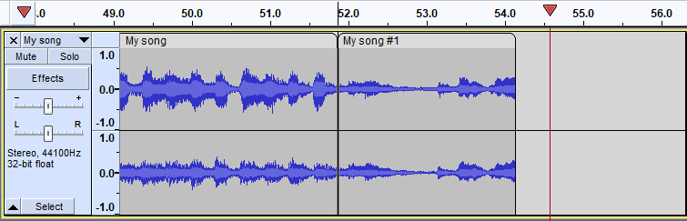
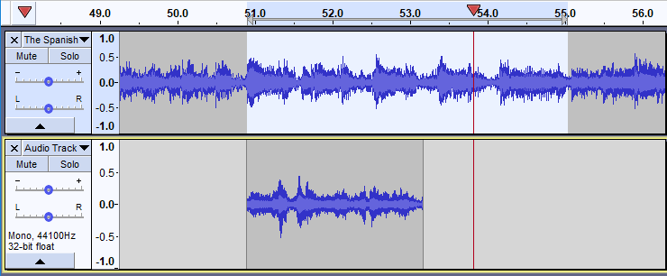
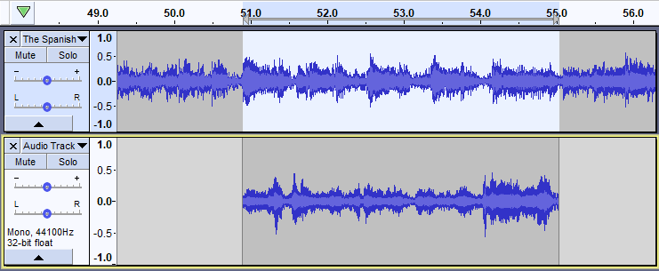
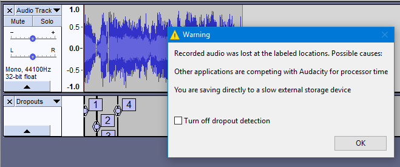

Recording
- If you have not made any recordings in Audacity before, you may want to try the the Audacity tutorial "Your First Recording" which includes step by step details of how to set up your equipment too.
| When making recordings, particular critical recordings, you should consider shutting down all other applications giving Audacity sole use of the computer. This can help to avoid skips, small dropouts, and ticks in your recordings.
And on Mac that means fully Quitting them not just closing them, as otherwise Mac will leave them open consuming computer resources.
|
Contents
- Setting up
- Recording on the same track
- Recording a new track
- Recording for a specific length of time
- Arming Audacity for recording
- Dropouts (small skips) in your recording
Setting up
- Connect your input source to your computer and verify that you are getting sound into your computer using your computer's sound input control panel or the custom mixer application that came with your particular audio interface.
- Tell Audacity which source you have selected to record from, use the Device Toolbar or Devices Preferences.
- Set the recording level using the input slider on the Mixer Toolbar while watching the indications in the Recording Meter. Try to aim for a maximum peak of around –6.0 dB (or 0.5 if you have your meters set to linear rather than dB). Tip: enlarging the Meter Toolbars by clicking and dragging them helps with this task.
To listen to what you are recording you have two options.
- If you computer's sound control panel supports sending the audio input to the computer's audio output then make this setting there.
- If that is not possible, click on so that it is checked.
Alternatively, if you are using an external audio interface or mixer you may be able to monitor the signal directly from that device.
For further information on setting up see: Audacity Setup and Configuration.
Detailed step-by-step instructions for setting up for recording are provided in the Your First Recording and the Copying tapes, LPs or MiniDiscs tutorials.
| As soon as you have made a recording it is strongly recommended to it immediately to WAV or AIFF (ideally to an external drive) as a safety copy before you start editing the project. |
Recording on the same track
This append recording is the default recording behavior in Audacity.
When you click the Record button  on Transport Toolbar (or use the shortcut R ) Audacity will record at the end of the currently selected, or only, track, or will create a new track if you currently have no tracks.
on Transport Toolbar (or use the shortcut R ) Audacity will record at the end of the currently selected, or only, track, or will create a new track if you currently have no tracks.
When recording like this, at the end of an existing recording, Audacity will place a Clip line at the junction between the two recordings (as in the image below) to aid you in separating them later if required. You can remove the clip line, if not required, simply by clicking on it joining the two clips.
- 
- Stereo track with appended recording showing a Split line at the end of the previous recording, here shown at 51.5 seconds
If you have your cursor positioned beyond the end of the existing track and then press Record, Audacity will start the recording from that cursor position and back-fill to the end of the existing audio with silence.
| Alternatively, instead of stopping the recording, you can click the Pause button To continue recording click |
Recording stereo into mono, or mono into stereo
You cannot append record a mono recording to a stereo track. If you try to do this Audacity will create a new mono track for you and the recording will be a pseudo appended recording, with the new mono audio start time being the end of the stereo audio (or the cursor position if that is set beyond the end of the stereo audio).
Similarly you cannot append record a stereo track into a mono track. Audacity will similarly create a new stereo track for the recording. However, if you have two mono tracks and try to append record in stereo, Audacity will place one stereo channel in each mono channel. If you have many mono tracks, you can select two of them and record the left channel in the first and the right channel into the second.
Recording a new track
If you hold the button down the Record button in Transport Toolbar will temporarily change to  . Then clicking on this modified Record button, or using the shortcut Shift + R will cause Audacity to create a new track and begin recording on that track from the current cursor position (or from the left edge of a region on the Timeline).
. Then clicking on this modified Record button, or using the shortcut Shift + R will cause Audacity to create a new track and begin recording on that track from the current cursor position (or from the left edge of a region on the Timeline).

- Mono track with new track being recording on a new tack below starting at the end of the previous recording (as that is where the cursor was left)
There is no need to create a new track before starting to record. If you want recording to start from the beginning of the project, click the "Skip to Start" button  on Transport Toolbar or press the Home shortcut. Press the Stop button
on Transport Toolbar or press the Home shortcut. Press the Stop button  (or use its shortcut Space) to Stop the recording.
(or use its shortcut Space) to Stop the recording.
Continuing recording in a new track
Instead of stopping the recording with the Stop button  or Space, you can stop the recording with the Play / Stop and Set Cursor shortcut X. When you record again using the Shift key modifier to get the
or Space, you can stop the recording with the Play / Stop and Set Cursor shortcut X. When you record again using the Shift key modifier to get the  record below, recording will start in a new track at the end-position of the track above.
record below, recording will start in a new track at the end-position of the track above.
Recording a region in a new track
If there is no Timeline region or selection, Audacity records until you stop the recording.
To record only the Timeline region in a new track, select the region in any of the existing tracks or the Timeline - see Recording for a specific time below. There is no need for the track containing the region to be selected.
Recording for a specific length of time
- Drag-select a region in an existing audio track - or choose the time range to be recorded in Selection Toolbar.
- Then hold down Shift press the button
 (or use the shortcut Shift + R ) to record in a new track for the duration of the selection you made.
(or use the shortcut Shift + R ) to record in a new track for the duration of the selection you made.
- 
- Mono recording on a new track below for a specific length of time
- 
- Recording for a specific length of time completed
If there is a selection that is entirely beyond the end of all selected tracks, then the recording will start at the beginning of the selection and stop at the end of the selection.
| Unless you wish to overdub from the previous track(s), if any, ensure is disabled, "off", which is not the default setting. |
Arming Audacity for recording
Arming Audacity simply means that you are preparing it for recording, readying it without the recording actually starting
To arm Audacity:
- Click the Pause button
 or its shortcut P
or its shortcut P - Click the Record button
 or use the shortcut R
or use the shortcut R
Audacity is now armed and ready to record. Note that monitoring in the Recording Meter will have becom active, monitoring your input signal:
Once you are ready to start recording simply click the Pause button  again, or its shortcut P (or the Record button
again, or its shortcut P (or the Record button  or its shortcut R) and recording will commence immediately.
or its shortcut R) and recording will commence immediately.
Dropouts (small skips) in your recording
Audacity now has dropout detection which is enabled by default. This is controlled from a setting in Recording Preferences called "Detect dropouts".
Dropouts may be caused by a disk drive that cannot keep up with the recording. This can happen, for example, with a slow USB or network drive, or if antivirus software is slowing writing to disk, or if other activity on the computer is slowing the computer down.
You may have been experiencing dropouts and not noticing, they are not discernible while recording only on playback. So Audacity could now appear much worse than previous releases, when in actual fact Audacity is just alerting you to a problem that you previously would not have been aware of - or might have put down to a bad microphone or poor recording technique.
When this setting is "on" (default setting) Audacity will detect dropouts (brief gaps in the recording) and will insert zeroes into the recording to keep the other good parts synchronized.
When recording stops, a message box alerts the user and a label track, called "Dropouts", is added showing the lost parts, labeled with consecutive numbers. This will be an additional new label track if you already have a label track or tracks.
- 
|